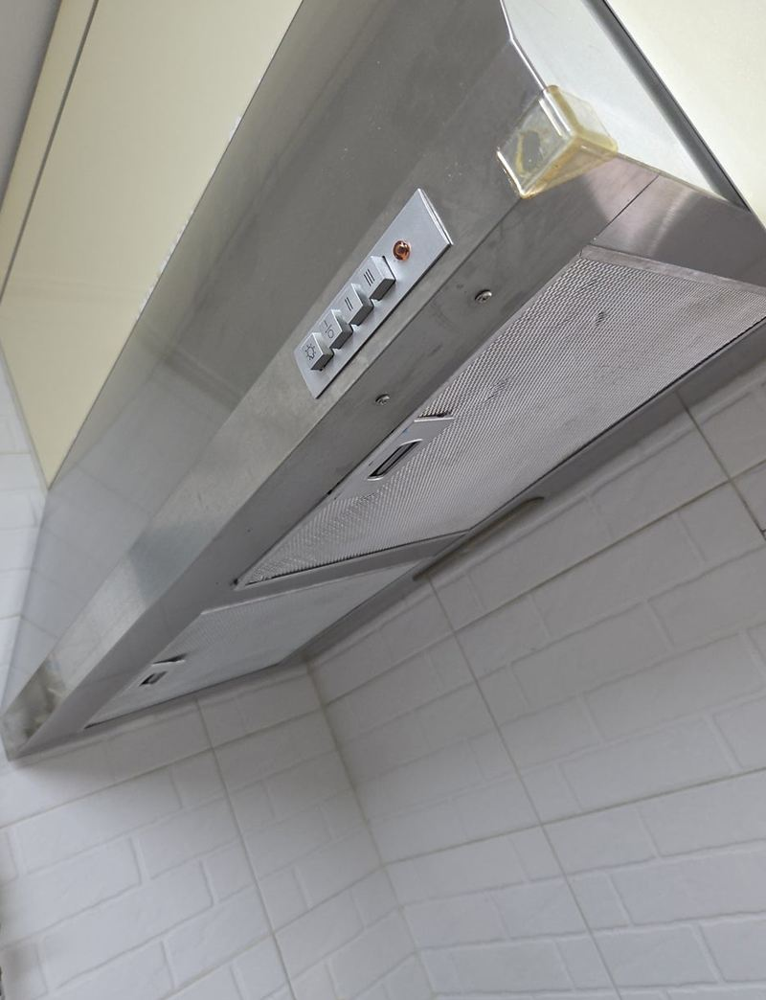
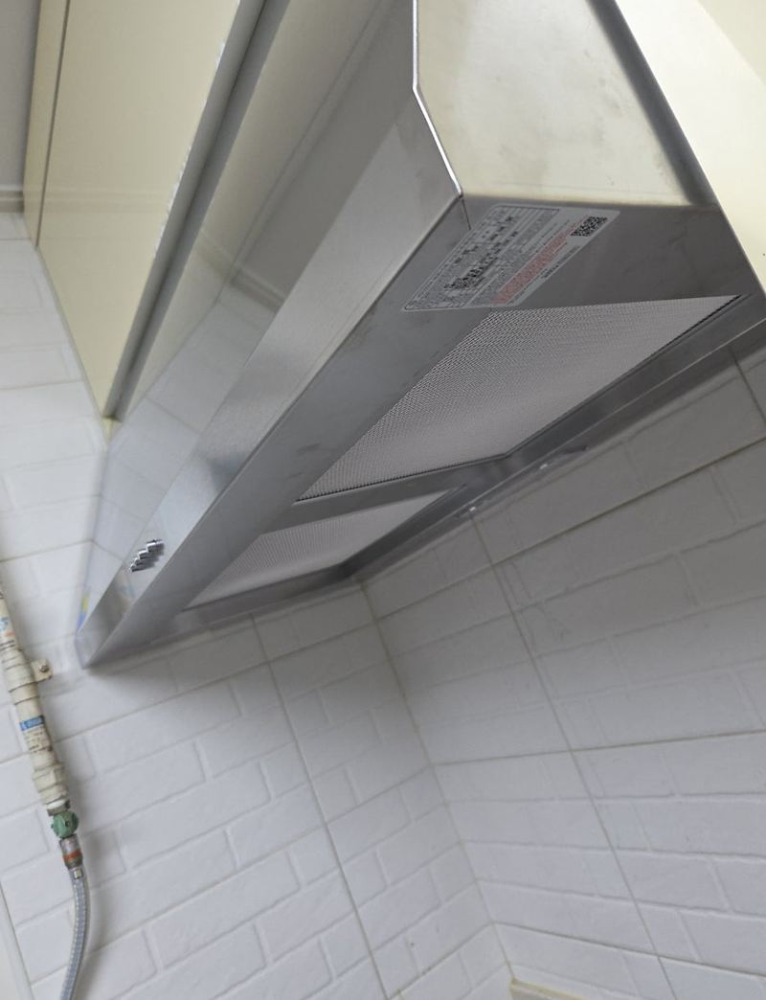
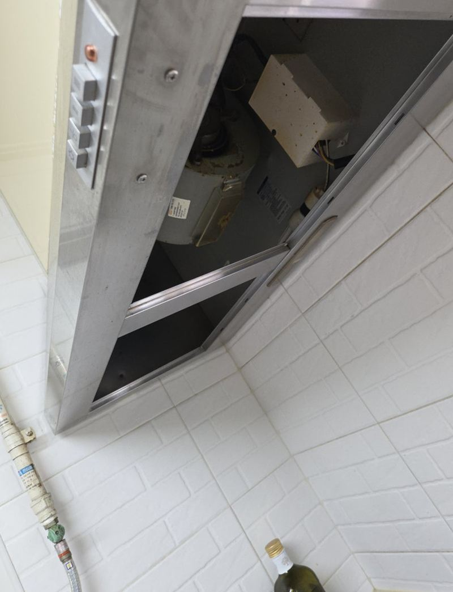
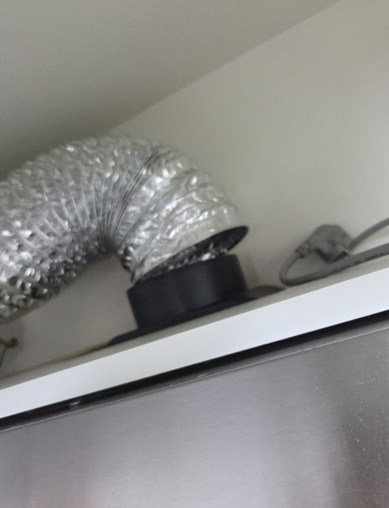
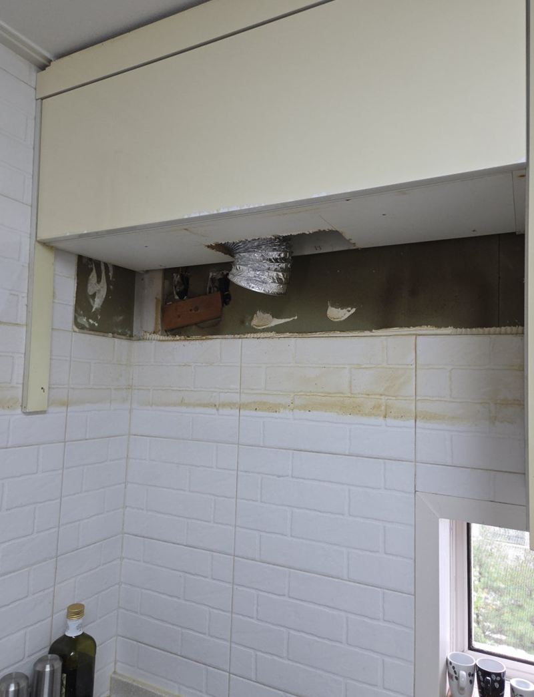
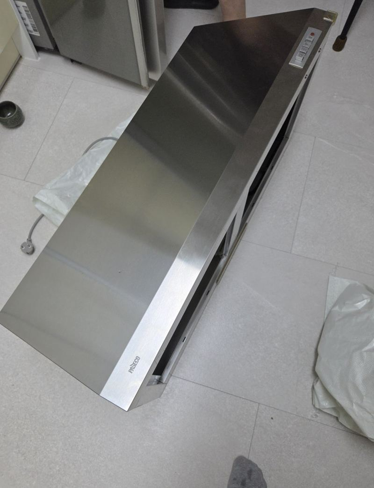
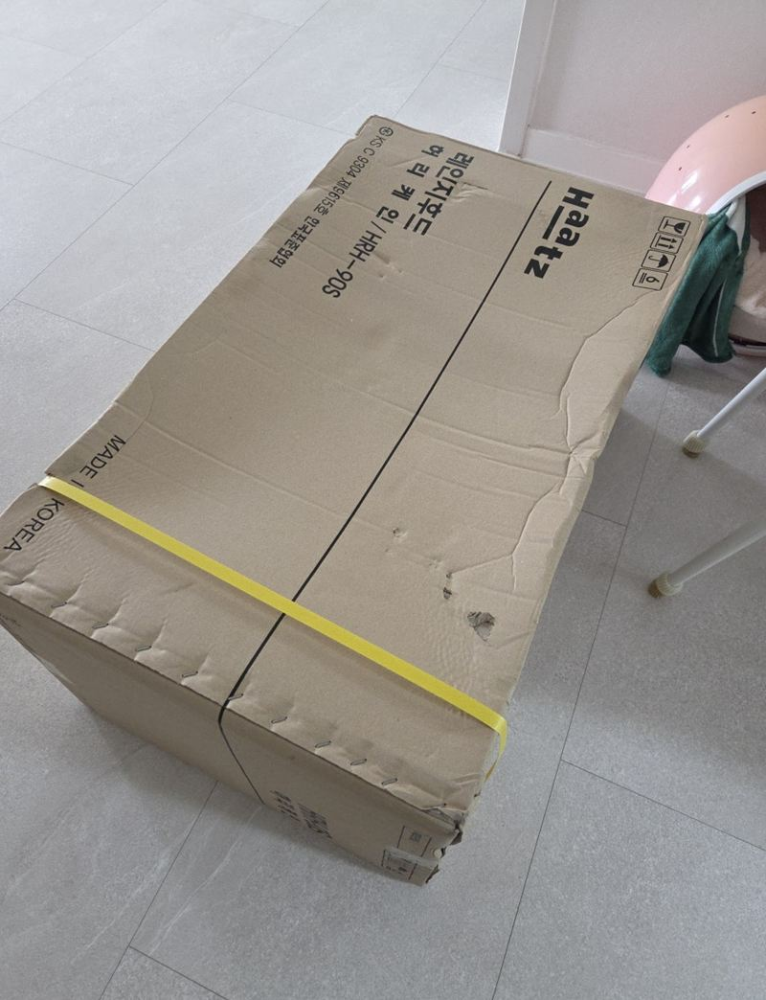

안양 배기 안 되는 주방 후드 교체 방법

 교체 전교체 후
교체 전교체 후← 밀어서 전후 비교 →
"이사 왔는데 주방 후드가 제대로 안 되는 것 같아요." 안양 석수동 아파트로 막 이사한 고객분이었어요. 상부장 아래 달린 허리케인형 후드는 오래돼 흡입이 약했고, 요리하면 냄새가 그대로 남았어요. 고객분은 주방 분위기가 크게 바뀌지 않게 같은 형태로 바꾸길 원하셨어요. 자바라와 전원을 먼저 분리하고 무거운 옛 후드를 받쳐 내린 뒤, 새 후드를 같은 자리에 고정하고 자바라를 단단히 묶어 연결했어요.
| 현장 | 안양 만안구 석수동 아파트 주방, 이사 직후 |
|---|---|
| 증상 | 후드 작동이 시원찮고 냄새·연기가 잘 안 빠짐 |
| 한 일 | 자바라·전원 분리 → 고정 나사 풀고 옛 후드 받쳐 내리기 → 새 후드 상부장·벽 기준 고정 → 자바라 연결·케이블타이 결속 → 전원·흡입 확인 |
| 제품 | 기존과 같은 허리케인형 |
오래된 후드, 흡입이 약해지는 까닭
후드가 켜진다고 배기가 되는 건 아니에요. 오래 쓴 후드는 모터 힘이 약해지고, 자바라가 느슨해지거나 배기구 쪽에 기름때와 먼지가 쌓여 소리만 나고 공기는 잘 안 빠져요. 바로 바꾸기 전에 배기구 막힘, 자바라 빠짐을 먼저 보는 게 맞지만, 이 집처럼 기기 자체가 오래됐다면 새 본체로 바꾸는 게 안정적이에요.
| 먼저 볼 곳 | 증상 |
|---|---|
| 자바라 | 빠지거나 꺾이면 냄새가 상부장 안으로 샘 |
| 배기구 | 기름때·먼지로 막히면 소리만 남 |
| 모터 | 오래되면 흡입이 약해짐 |


무거운 후드 떼고 다는 과정
자바라와 전원 분리
본체를 건드리기 전에 자바라를 빼고 전원 플러그를 뽑았어요.

받쳐 내리기
허리케인형은 크고 무거워요. 상부장과 벽에 박힌 나사를 푸는 동안 본체가 한쪽으로 기울어 떨어지지 않게 받치며 천천히 내렸어요.


새 후드 고정
새 본체를 상부장과 벽 기준에 맞춰 수평으로 고정했어요.

자바라 연결과 결속
자바라를 다시 끼우고 케이블타이로 단단히 묶었어요. 헐겁게 끼우면 쓰다가 빠지거나 배기 효율이 떨어져요.
교체 후 확인한 것
- 전원 반응버튼과 조명이 제대로 켜지는지 봐요.
- 흡입력단계별로 바람이 세게 빨려 들어가는지 확인해요.
- 배기 흐름연기가 상부장 안으로 새지 않고 배기구로 나가는지 봐요.
- 자바라 고정결속 부위가 흔들리지 않는지 확인해요.
나중에 소리는 나는데 냄새가 안 빠지면 배기구와 자바라 연결부터 보시라고 안내해 드렸어요. 고객분은 "이사 후 계속 찝찝했는데 같은 형태로 바뀌어 주방이 깔끔해졌다"고 하셨어요.
후드 고를 때 브랜드보다 먼저 볼 것
후드는 여러 회사 제품이 있지만, 먼저 맞춰야 할 건 기존 자리의 크기와 배기구 방향이에요. 폭이 다르면 상부장 마감이 어긋나고, 배기구 방향이 다르면 자바라가 꺾여요. 기존 후드 폭과 상부장 칸 사진이 있으면 맞는 제품을 고르기 쉬워요.
교체 전 준비하면 좋은 것
- 상부장 비우기후드 위 칸에 든 물건을 빼 두시면 자바라 작업이 빨라요.
- 가스레인지 위 정리후드를 내릴 때 아래에 공간이 있어야 해요.
- 기존 후드 폭폭을 재 두시면 맞는 제품을 미리 준비할 수 있어요.
후드 교체 질문
허리케인형을 슬림형으로 바꿀 수 있나요?
가능해요. 다만 상부장 아래 빈 공간이 생기면 마감을 따로 해야 해요.
자바라도 새로 바꾸나요?
찢어지거나 기름이 찼으면 함께 바꾸는 게 좋아요.
배기구가 막혔으면요?
배기구 쪽 기름때를 정리해야 새 후드도 제 힘을 내요.
후드가 너무 시끄러워요.
팬이 닳거나 고정 나사가 풀린 경우가 많아요. 상태를 보고 정해요.
이사 오자마자 바꿔도 되나요?
짐이 덜 들어왔을 때 하면 주방 작업이 수월해요.
옛 후드는 어떻게 하나요?
원하시면 떼어 낸 후드를 가지고 나가요.
필터 청소는 얼마나 자주 하나요?
요리를 자주 하면 한두 달에 한 번은 닦아 주세요.
다른 후드 현장
후드 정면과 상부장 안 자바라, 콘센트 위치를 찍어 보내 주세요.
전화 상담 010-4517-9872